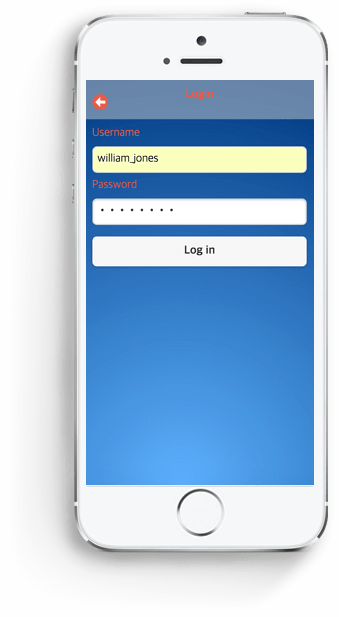
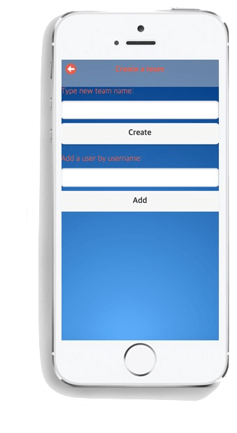
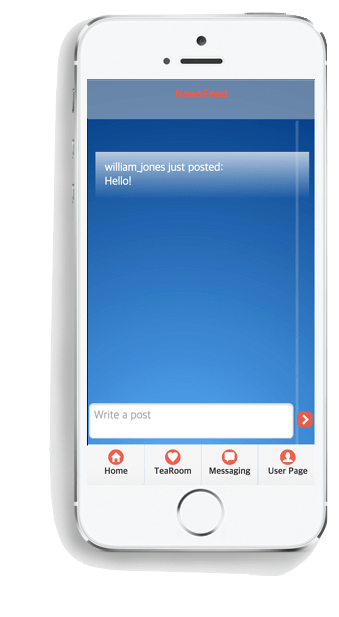
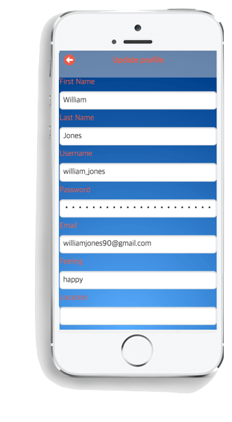

With only your smartphone and the TeaMe app you can easily connect and socialise with other co-workers that are working remotely.

by Laman Mammadova and Nathalie von Huth for ATOS
The purpose of this research is to gather information about today’s workplace and identify needs for companies to develop the future workplace. With this research and the information collected it can be investigated how the company can perform both a remote concept but also keep the benefits from the social workplaces. We believe that this research can be used by ATOS’s company to achieve these goals and to make their projects even more time efficient.
The concept of the app is to provide a social platforms for employers and employees of the company to interact in a social way as well as keeping track of tasks of each member of the group and be able to speak in both a common platform/chat and private message individual team members.
About VideoThe first page that occurs when you click the application logo is the page which includes TeaMe logo, ‘Log in’ and ‘Register’ buttons.
If you are a new user and don’t have an account with TeaMe, but want to create an account, you click ‘Register’ button. Then, the page you are directed to is the Register page. There you can fill in your details and submit in order to create a new account.
The page that you are directed when you click the ‘Log in’ button is the Login page. On the screen, there is spaces allocated for username and password separately, and log-in button. After the user types his/her username and password, and clicks the log-in button, he/she will be taken into the 2nd page.

The second page is the page is a team page which is called ‘Choose a team’ where all the teams are shown that you are a member of. So, on the screen there are different buttons in which a particular team name is written. The users can select the appropriate team they want to communicate or see the news feed related to that team. In addition, if you are a new user or you are not the member of any team, you can select the “+” button on the upper right side of the page to create a new team. After the user goes to the creating team page, that person is provided by the specific fields for adding team by typing the new team name, and adding members by adding their usernames.

The Feelings page lets you choose how you feel in that specific moment. If you feel like your mood has changed during the day you are able to change this in your user profile.
After picking the feeling, the application takes the user to the third page which is ‘News feed’. There the user can post news within the group it's currently in. The user can also see updates done by other team members.
The Message Page is where the members of the specified team are able to have a conversation which each other. So, first of all the user needs to select a person from the list of the members of team, then that person is allowed to have chat with the selected member.

The TeaRoom page provides a "room" where the team members can talk about their interests and other themes which is not work related. It is supposed to be a 'safe space' where you would want to talk to your teammates about whatever crosses your mind.
This is the page where user details are displayed. Also, by choosing the button in the up left corner of the page, the user can edit and save their details. For example, if the user wants to update his/her status, or location, that user can go to edit profile page and update those parts. Also, the User Page is the page where the user can go to the teams page in order to change the team they are in, as well as to create a new team.

During this term we have mastered building a full mobile application from scratch by implementing the Model View Controller concept which is aligned with the clients requirements. We have been able to fully use a functioning chat API, which allows the user to chat and write posts.
Our mobile application is created with web technologies and covered in a wrapper which will translate the web application into a mobile application. The wrapper we are using is called Apache Cordova and can translate our mobile application into an iOS, Android and Windows apps etc. The reason for building the mobile application as a web application rather than a native application is because the client wanted a cross platform app. It’s also easier to maintain and since web technologies is faster developed it can be easier for future implementation to include new features. A greater number of developers are also more familiar with web technologies, and can easier be passed over for further development.
Key patterns that are essential in web development and is being used in our mobile application. These patterns are important because they can help you structure problems that have already occured earlier for other people. Some of the design patterns we have used is: State, Template View, MVC, Login and Reliable Sessions.
During this term we have researched different methods on how to test the software we are producing and developing for the next term. We will try to use different algorithms to make automated tests. We will do this by connecting it to our vesrion control system and try out all the changes we have made. The testing is important to spot mistakes or errors at an early stage such that the errors can be fixed before we move on. There is a online tool called Travis that will help us test and deploy our web application for free, and since it can connect to Github it is benefitial for us.
An effective testing strategy includes automated tests to efficiently reduce risk. We can do tests with different methos:
Unit tests validate the small components of the system, making sure they take the right input and outputs correctly. We can do a unit test on individual classes in our application to verify that they work under different cases.
Integration test is an exercise of an entire subsystem of the project and ensures that a set of components play nicely together within that subset.
Functional testing is a test to verify scenarios from start to beginning that your users will engage in.
So why bother with unit and integration tests if functional tests hit the whole system? Two reasons: test performance and speed of recovery. Functional tests tend to be slower to run, so use unit tests at compile time as your sanity-check. And when an integration test fails, it pin-points the bug's location better than functional tests, making it faster for developers to diagnose and fix. A healthy strategy reqires tests at all levels of the technology stack to ensure each part, as well as the system as a whole, works correctly.
We have also carried out other types of testing to improve the user experience for the user. The first testing strategy was 'User acceptance testing' which has been based on our five use cases. The second testing has been 'Responsive design testing' and 'Cross platform testing' which makes the app responsive to different screen sizes and works on different platforms. The third testing strategy was user experience testing which has been carried out with a questionnaire to two different users, getting asked the same questions.
Testing DetailsDuring the development process we had many different ideas of what we wanted the app to be like, and we changed our mind as we developed as we saw what would work better depending on the requirements. Starting the project we gathered all the requirements, and got the mockups from the ideas we got from the project scope. We then researched all possible methods on how we could complete this project, which platforms and languages to use. We realised since the client wanted this app to be cross platform we created a web application which used a wrapper called Apache Cordova to convert it to the desired platform.
More details about specific details about content deliverables contribution and time management of the tasks can be found in the Gantt Chart provided below.
This term we have split tasks more or less equal between each other. Even if we had primary roles and responsibility for major parts of the application we still had to work closely together in order to connect the fron end with the back end. Our main responsibility between each other were
Team key member in the management of the development process, where different tools have been used to track the process, such as the Gantt Chart. Nathalie has been working on the front end mainly implementing all the chat functionalities, as well as connecting the front-end with the back-end. Front-end includes all functionality the user interacts with and also the design of the app.
Laman has been working on the back-end of the app dealing with retrieveing data and putting data in the database from input in the front-end. She has managed to create a many to many relational database in order to create the teams. Also, she has been working in collaboration with Nathalie on the connection of the front and back end parts of the application.
More details about specific details about content deliverables contribution and time management of the tasks can be found in the Gantt Chart provided below.
Gantt Chart
The version control we are using to create TeaMe's application is Git through GitHub. We have one repository for the website and one repository for the application where we are working together. The version control will make us not override each others work, save changes during the development and revert to previous versions.